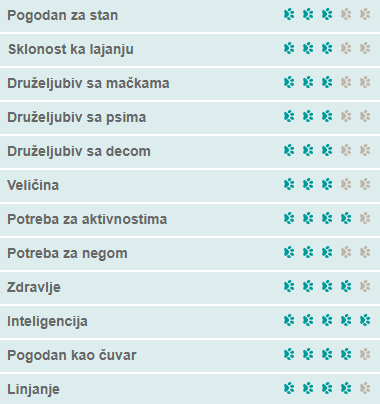
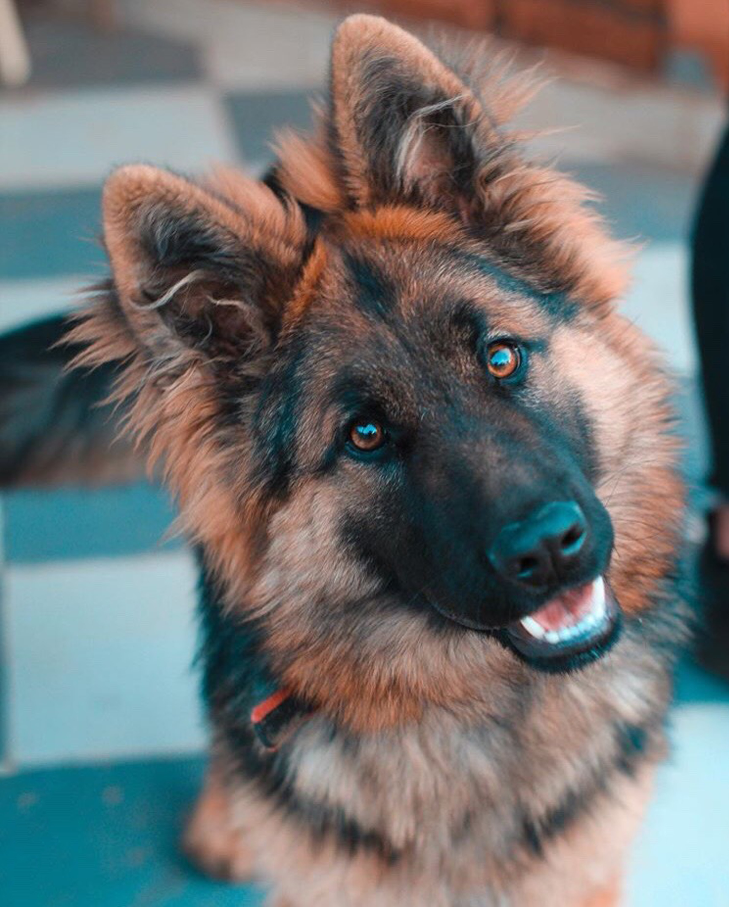
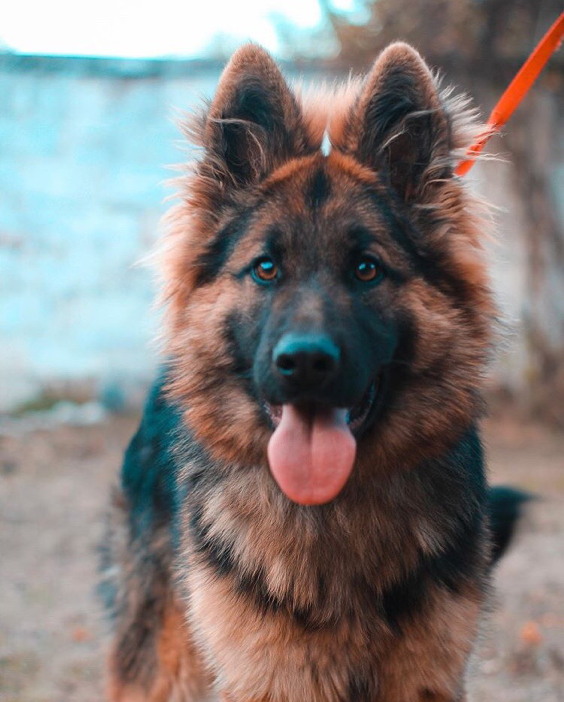
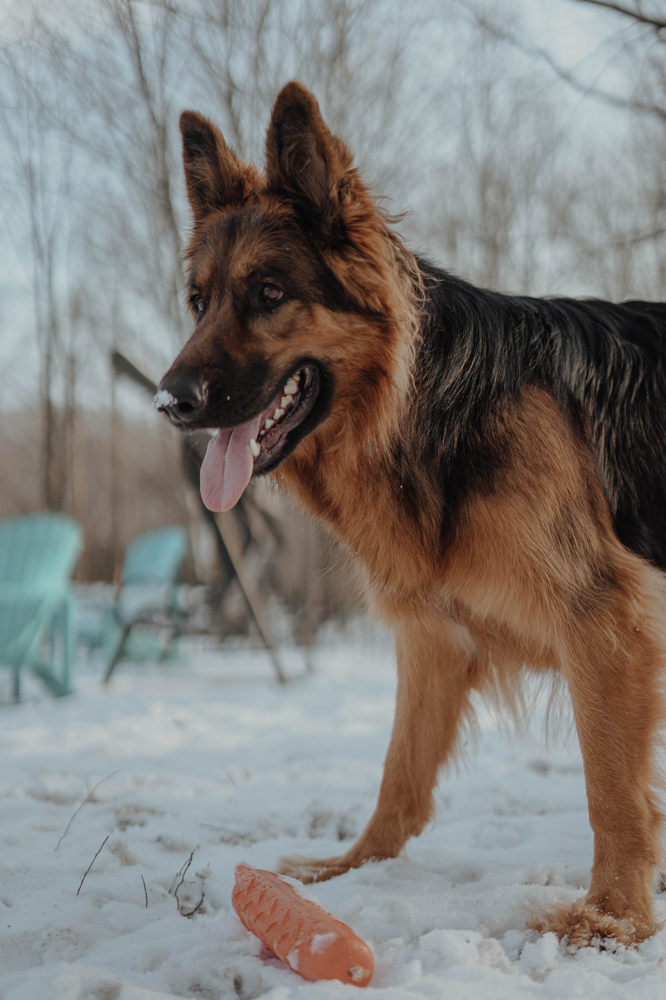

Немачки овчар

- Карактеристике
- Немачки овчар је једна од најпопуларнијих раса у свету, због своје изузетне интелигенције и способности. Он је храбар, прилагодљив, одан свом господару, интелигентан, краљевског држања. Због дозе самопоуздања коју поседује овај пас, страна лица (која нису део чопора) не прихватају баш најбоље и одмах.
- Изглед
- Немачки овчар је средње велики, благо издужен, снажан и добро мишићав пас. Кости су му суве и целокупна грађа је чврста. Боја длаке је црна са кестењастим, смеђим, жутим до светлосивим ознакама.
- Дресура
- Психологија немачког овчара је веома компликована, што са интелигенцијом коју пас поседује, јаким емотивним инстиктима и самопоуздањем чини немачког овчара погодним за разне послове. Људи су се доста бавили испитивањем интелигенције код паса, и сматра се да немачки овчар спада у 5 најинтелигентнијих паса на свету. Због тога су у стању да за веома кратко време савладају нове задатке који се пред њих стављају.
- Нега
- Немачки овчар добро подноси затворен простор, ако се довољно тренира. Највише му одговара да има велико двориште на располагању. Овај пас се лиња током целе године, а сезонски му отпада много длаке. Требало би га свакодневно четкати. Купање се препоручује само ако је неопходно, јер испирање природне масноће са коже може да изазове проблеме са алергијама.
- Здравље
- Немачки овчар је генерално здрава раса, али као и свака раса, може да пати од неких болести, а најчешће су: дисплазија кукова и колена, торзија желуца, срчани проблеми, алергија, глувоћа, епилепсија.
- Животни век
- У просеку живе око 13 година.



Кликните за почетну страницу
Ако вам се свидео баш овакав пас, можете погледати огласе за његову продају кликом на овај текст.